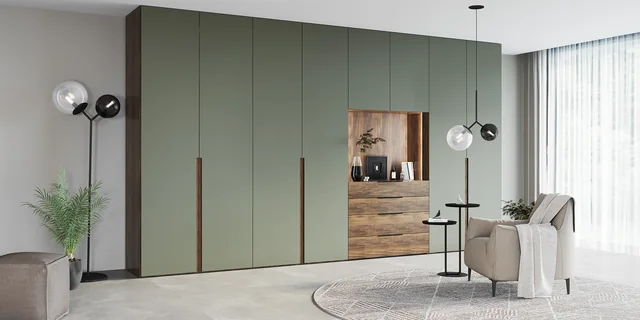
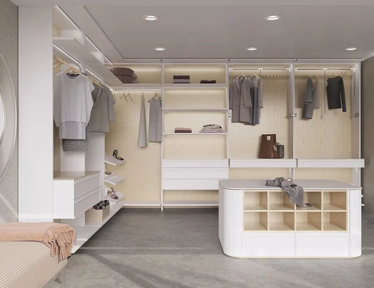
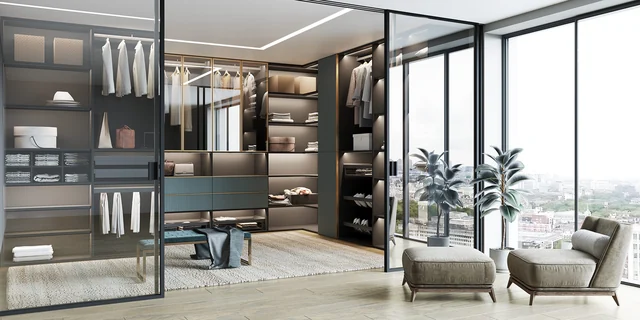
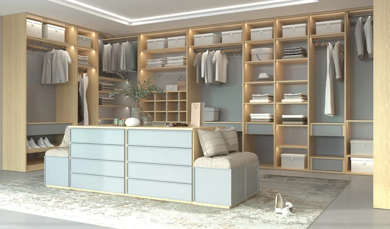
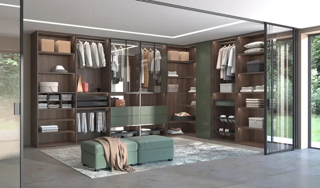
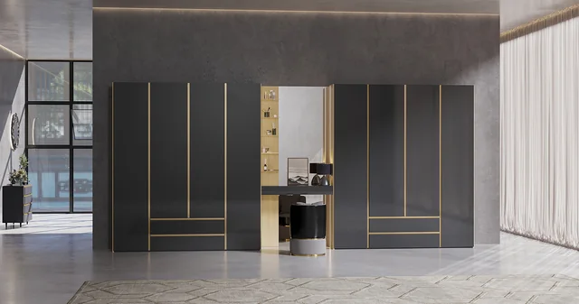
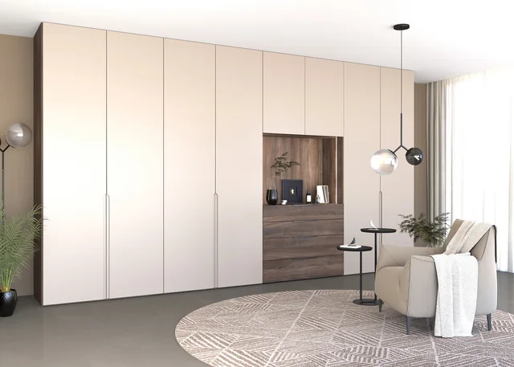
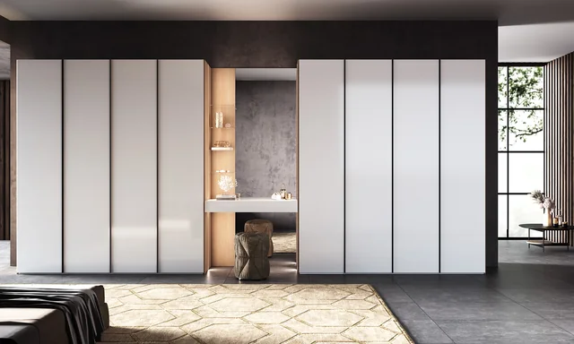
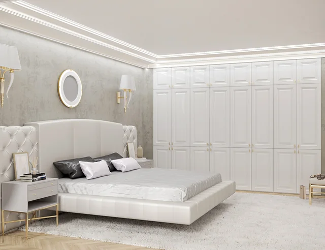
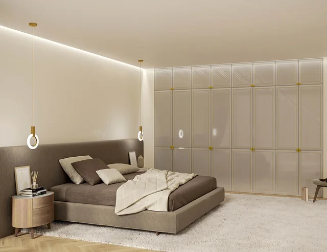

По размерам помещения
Изучаем планировку, ниши, высоту и проходы. Определяем, как разместить хранение и сохранить удобный доступ.
Проектируем гардеробную под пространство и ваши привычки. Учитываем размеры помещения, состав вещей и то, как вы пользуетесь ими каждый день.
Обсудить гардеробнуюИзучаем планировку, ниши, высоту и проходы. Определяем, как разместить хранение и сохранить удобный доступ.
Предусматриваем зоны для длинной и короткой одежды, обуви, белья и аксессуаров. Соотношение секций определяем вместе с вами.
Часто используемые вещи располагаем под рукой, сезонные — отдельно. Учитываем рост и привычки владельцев.
10 моделей из каталога мебельного партнёра РИМИ. Откройте дополнительные фото под моделью или нажмите на изображение, чтобы рассмотреть его крупнее.










Расскажите о помещении и пожеланиях к хранению. Если есть план или размеры, подготовьте их к обсуждению. Состав проекта, материалы и стоимость согласуем индивидуально.
8 800 201-77-67Опишите задачу — подготовим обращение в студию.